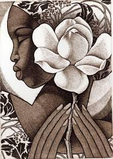

|  | tradiciones, cultura |
| INICIO | TRADICIONES Y COSTUMBRES | BAILES |
TRADICIONES Y COSTUMBRES
COSTA: EL BAJÍO DE GUERRERO Y OAXACA
CUAJINICUILAPA GUERRERO
En el festejo del Sr. Santiago Apóstol un grupo de jinetes recorren la población mientras estallan juegos pirotécnicos, así como ofrecimiento de banquetes y bebidas. En el festejo de San Nicolás Tolentino se baila "El toro petate" por todo el pueblo, que consiste en buscar un toro que se entrega a San Nicolás, antes lo pasean por todo el pueblo. Se celebran todavía ceremonias ocasionales como el "entregamiento y el perdón de los novios", el despedimiento de un difunto, así como el torneo de coplas. |
SANTIAGO JAMILTEPEC OAXACA
La celebración empieza desde nueve días antes del festejo, con la participación de los habitantes de los distintos barrios y miembros de asociaciones religiosas; los feligreses van precedidos todos los días por un bello estandarte de la imagen, hasta arribar al templo católico, en donde se reza la tradicional «novena» a la santa patrona del lugar. El día de la fiesta se celebra misa solemne y procesión por todo el pueblo. Al término de cada Celebración Eucarística se abren las puertas de acceso del nicho ubicado en el altar mayor del templo, para que los fieles católicos del lugar y visitantes, luego de esperar en larga fila, puedan ver de cerca y tocar el manto de la virgen. |
SAN JUAN BAUTISTA LO DE SOTO, OAXACA
 |
El 29 de Junio se festeja San Pedro y San Pablo, El Rosario que se celebra el primer domingo de Octubre, hay misa celebrando a su patrón , generalmente hay juegos mecánicos, también torneos de basquetbol; estas fiestas normalmente acuden muchas personas cercanas del pueblo, tienen otras fiestas como el día de muertos donde salen a bailar la danza de los diablos recorriendo las calles de esta población. |
HUAJINTEPEC, GUERRERO
El Toro la más bella y representativa de las danzas costeñas. Acompañado de sus sesenta vaqueros (la crema y nata de la juventud de huajintepequense) recorre las calles Los diablos bailan a su alrededor en tanto la vieja coquetea y El viejo se pone celoso. Musica, cohetes, lluvias, gritos, alegría siguen al toro con el mayordomo la madrina, los símbolos religiosos,EL TORO ES HUMILDE y respetuoso, se inclina y hace reverencias y nunca le da las espalda. Pero cuando baila las chilenas el toro es impetuoso, imponente y majestuoso. Ver la unión musical del toro con la chilena, es algo único, hay que verlo para vivirlo. Al toro para que baile solo se le toca chilenas es lo más regionalista de los costeños. |
¡NO SOMOS INDIOS, SOMOS NEGROS!
síguenos en nuestas redes sociales
Facebook: CONOCIENDO MEXICO